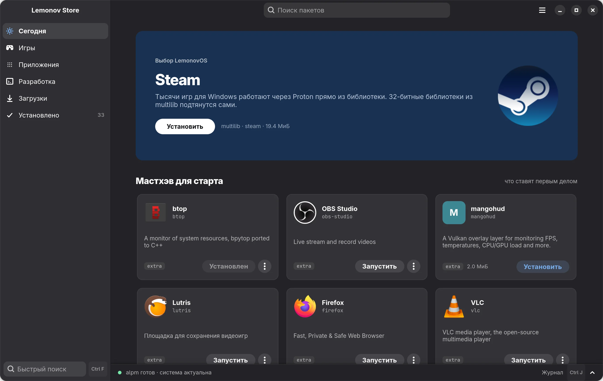
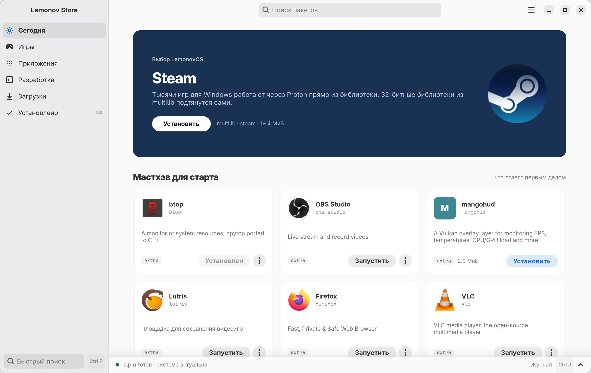
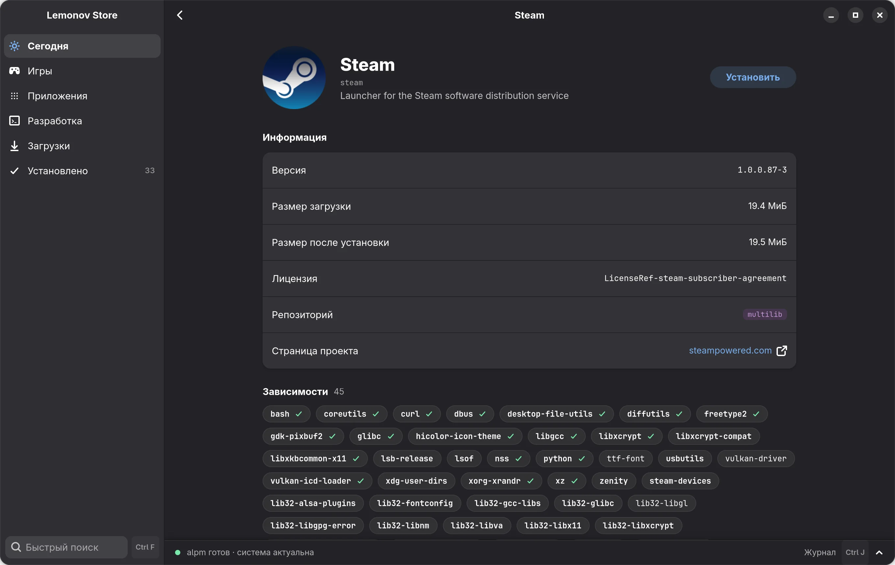
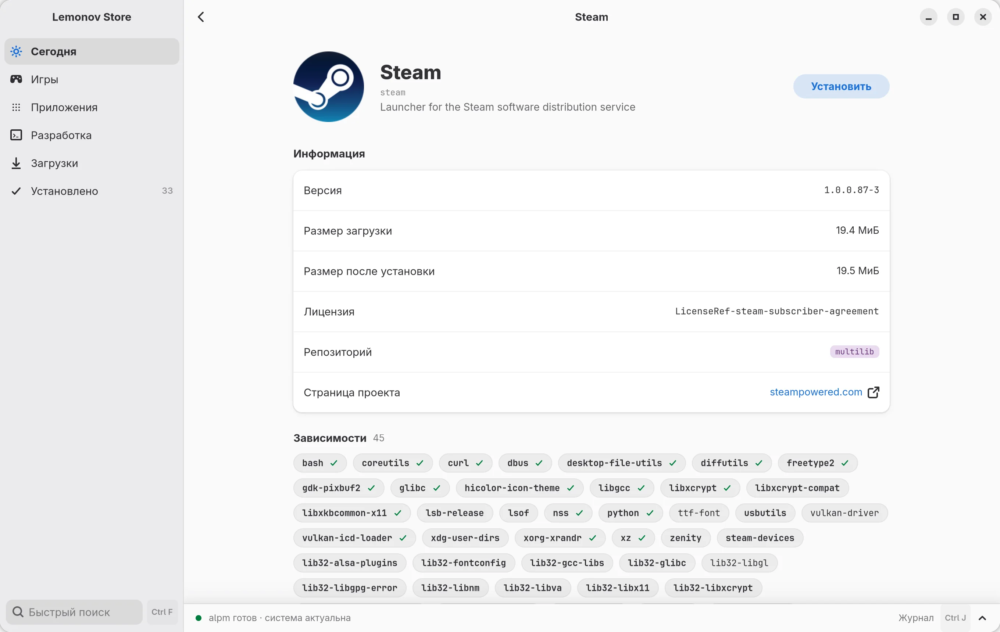
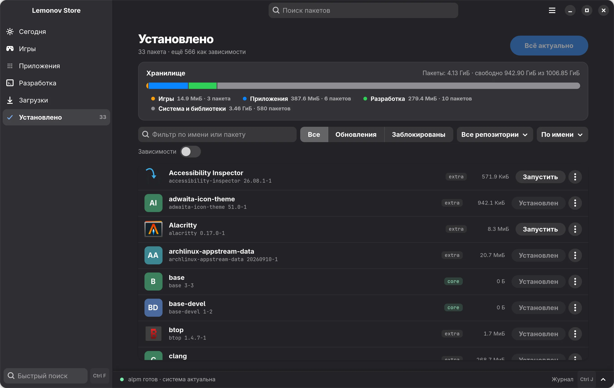
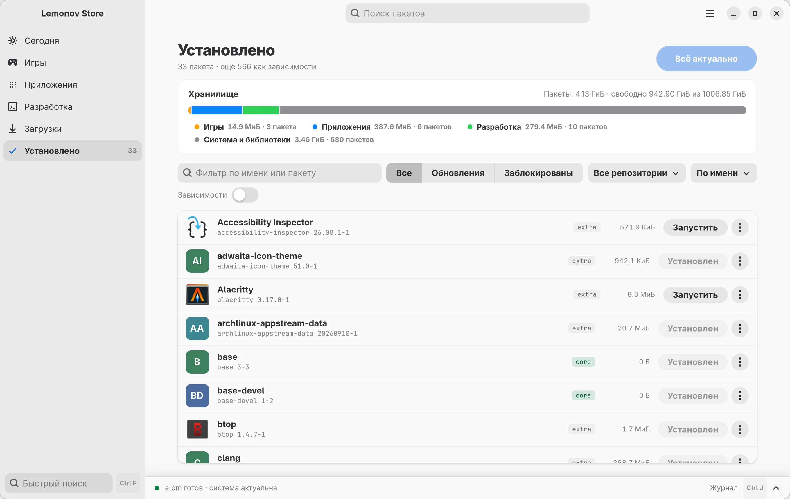
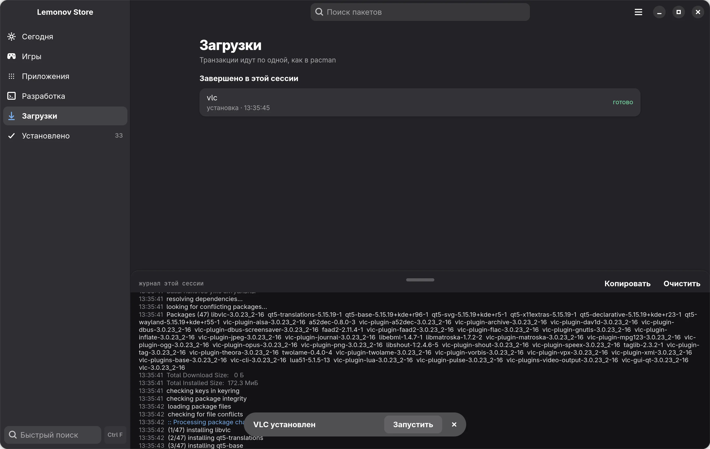
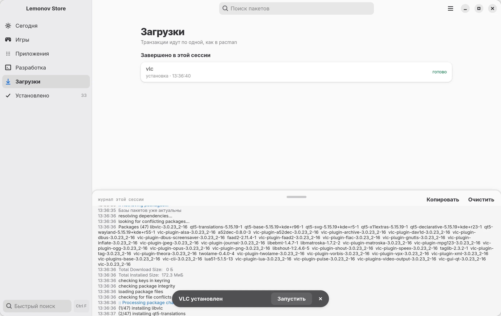

Lemonov Store
Магазин приложений для LemonovOS. Он читает те же базы, что и pacman, и ставит пакеты через libalpm. Своей базы пакетов у него нет.


Что уже работает
- Каталог
- Версия, размеры, лицензия и зависимости берутся из баз pacman, как у
pacman -Si. Названия и иконки приложений приходят из AppStream. Оценок и числа скачиваний нет: в репозиториях Arch таких данных нет, а выдумывать их мы не стали. - Установка и обновление
- Задачи идут в очереди по одной, как этого требует pacman. Перед установкой программа обновляет базы, а если в системе ждут обновления, просит сначала обновить её целиком: Arch не поддерживает частичные обновления. Поэтому кнопка «Обновить» у одного пакета обновляет всё. Пакет можно заблокировать, и он не попадёт в обновления.
- Журнал
- Внизу окна видна текущая стадия, а
Ctrl+Jоткрывает журнал alpm целиком. Установку можно отменить, пока пакеты ещё не записываются на диск. - Запуск
- У графических приложений есть кнопка «Запустить». Пока приложение работает, она превращается в зелёную «Запущено».
- Установленное
- Полоса хранилища показывает, сколько места занимают игры, приложения, разработка и система. Нажатие на категорию фильтрует список. Если пакет поставили в терминале, список в окне обновится сам.
- Права
- Окно работает от обычного пользователя. Пароль у вас спрашивает polkit, и только когда нужно что-то изменить в системе.
- Вид
- Светлая и тёмная тема, синий или золотой акцент, кнопки окна справа или слева.






Устройство
Программ две. Окно рисует интерфейс и ничего не меняет в системе. Транзакции выполняет маленький помощник, который запускается от root через polkit только на время работы.
lemonov-store окно, ваш пользователь │ события в JSON lemonov-helper root, через polkit │ libalpm базы pacman те же, что у pacman
Помощник проверяет имена пакетов, которые получает от окна, и принимает только известные команды: установить, обновить, переустановить, удалить, обновить базы, очистить кэш и заблокировать обновления.
Так выглядит журнал в приложении при установке:
16:07:08 checking keys in keyring 16:07:08 checking package integrity 16:07:08 loading package files 16:07:08 checking for file conflicts 16:07:08 :: Processing package changes... 16:07:08 (1/2) installing fzf 16:07:08 (2/2) installing pacman-contrib 16:07:08 :: Running post-transaction hooks...
О пакетах
Пакеты в репозиториях делают и подписывают сторонние люди, а не разработчики Lemonov Store. Разработчики не создают их, не проверяют содержимое и не управляют серверами, зеркалами и базами пакетов. Подписи проверяет libalpm по настройкам вашего pacman.conf.
Если репозиторий, зеркало или база пакетов будут взломаны, вредоносный пакет может попасть на ваш компьютер. В пределах, допустимых законом, разработчики Lemonov Store (включая тех, кто присылает изменения) за это не отвечают. Установки из AUR в программе нет сознательно: это чужие сборочные скрипты, которые выполняются с вашими правами.
При первом запуске программа показывает эти условия и просит поставить галочку. Подробности и лицензия: правовая информация.
Чего ещё нет
- Репозиторий LemonovOS
- Для него нужны сам репозиторий и его ключи. Пока магазин видит те репозитории, которые прописаны в
pacman.conf.
Вопросы
Когда можно будет скачать?
Скоро. Версия 0.1 уже собирается и работает, мы доводим её до выпуска. Кнопка наверху станет ссылкой, когда появится первая сборка.
Это работает только в LemonovOS?
Нужен pacman. Мы проверяли на обычном Arch Linux: каталог, установка, обновление и удаление работают так же.
Магазин ставит что-нибудь в обход pacman?
Нет. Пакеты ставятся через libalpm. Своей базы пакетов у программы нет.
Будет ли AUR?
Нет. Это чужие сборочные скрипты с вашими правами, и мы не хотим отвечать за такую установку. Для AUR есть отдельные инструменты, и пользоваться ими вы можете сами, в терминале.
Сколько он потребляет?
По нашим замерам релизной сборки на Arch: около 150 МБ памяти в покое (при запуске на несколько секунд до 250 МБ) и нулевая нагрузка на процессор, пока вы ничего не делаете. На другом железе цифры будут другими.